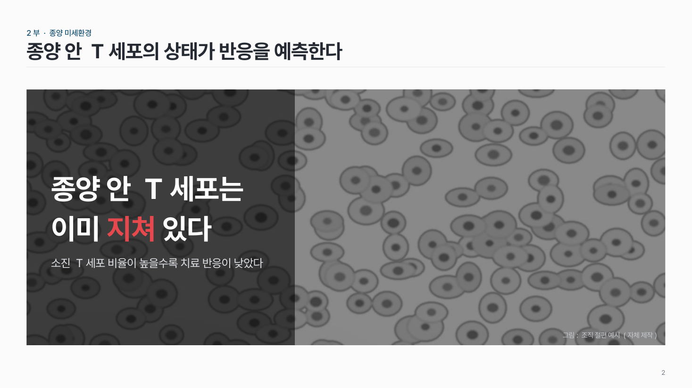
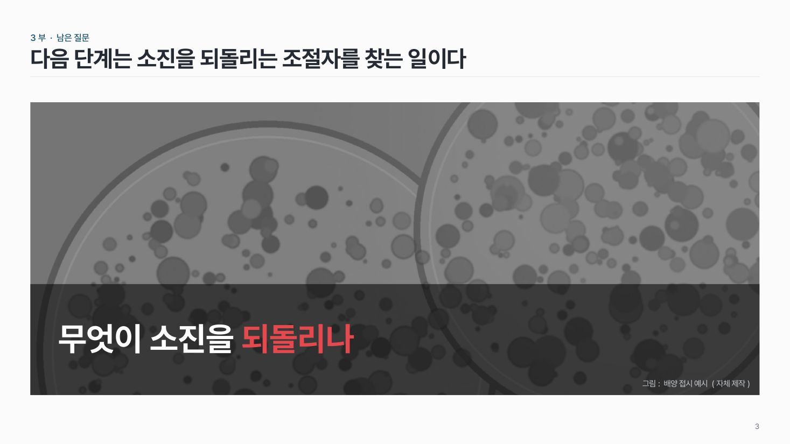

사진 위 문장 img-02
사진 한 장을 꽉 채우고 어두운 면 위에 메시지 한 문장. 사진은 흑백으로 낮춰요.

이 시안
아래 띠 · 메시지 + 보조 줄 + 출처
슬라이드 제목: 면역항암제 반응은 환자마다 크게 다르다
언제 쓰나
발표 첫머리나 섹션이 바뀌는 곳에서 한 문장을 던질 때요. 사진은 분위기를 전하고, 글은 한 문장만.
이럴 땐 다른 패턴
- 수치 · 근거를 같이 보여야 하면 메인 그림
- figure 를 근거로 보여 주면 Figure + 결론
구성
- 본문 영역을 사진으로 꽉 채워요 (비율은 지키고 잘라요).
- 사진은 흑백으로, 밝기를 낮춰요.
- 아래 띠나 왼쪽 면에 반투명 검정을 깔고 메시지 한 문장 + 보조 한 줄.
- 키워드 하나만 강조색, 출처는 오른쪽 아래 아주 작게.
시안 비교
같은 내용을 옵션만 바꿔 그렸어요. 그림을 누르면 크게 보여요.
A아래 띠 · 메시지 + 보조 줄 + 출처
슬라이드 제목: 면역항암제 반응은 환자마다 크게 다르다

B왼쪽 면 · 세로 사진을 위쪽 남기고 자름
슬라이드 제목: 종양 안 T세포의 상태가 반응을 예측한다

C아래 띠 · 메시지만 · 사진 위쪽을 남김
슬라이드 제목: 다음 단계는 소진을 되돌리는 조절자를 찾는 일이다